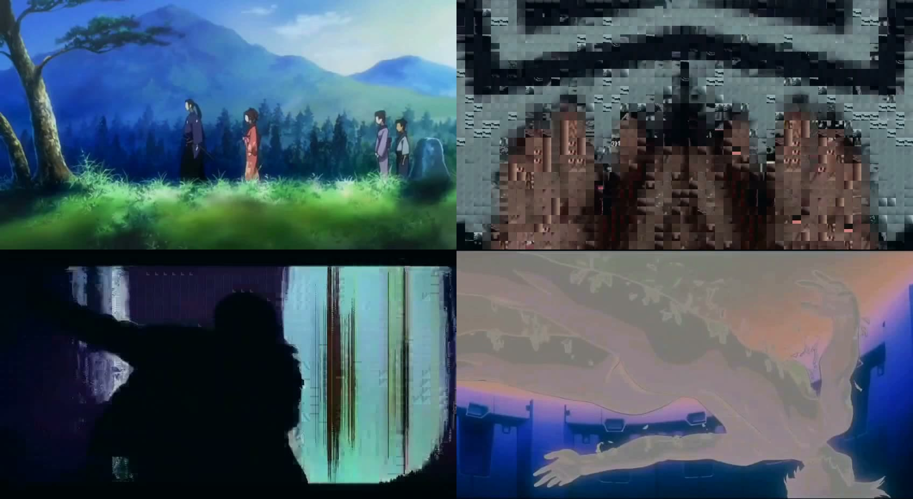

01 · Nightwatch Harness
An agent runtime with manners
A head in the cloud and hands on a real machine — and strict rules about which one gets to decide.
Two tiers, one rule
The cloud head keeps every judgment: gates, scoring, anything that commits. The workstation tier only does work whose output can be checked — extraction, triage, compression, soak tests. If it vanished mid-run, the correct outcome is a slower cycle, not a wrong one. On this desk the local seat is a GTX 1070 with 8 GB, running a 14B model; a 5090-class card (32 GB) would hold a 32B-class model at several times the tokens per second — the contract stays the same, only the hands get bigger.
Wake leases
Workers never touch the machine directly. They take reference-counted leases; a lease can wake the box over the network and waits for SSH before it counts. The last release runs the sleep decider.
A machine that sleeps honestly
The decider sleeps the box only when nothing is leased, no wake is pending, nothing is playing, and real input has been still for ten minutes. Media playback counts as activity — music on means someone is home.
The fault that taught it manners
A scheduled sleep check on the box couldn't see the lease registry and put the machine down mid-work, seven minutes after a wake, with two leases held. The fix: the lease manager now stamps the check's own flag file on every acquire and clears it on the last release. Both sides log every verdict.
- Lease-gated wake
- Every sleep verdict logged
- Zero credentials on the local tier
- Interactive use preempts, instantly
02 · Nightwatch Swarm
A census too big for one machine
A clone fleet on the same workstation that collects the census — and proves every byte it brings back.
Reference host: Ryzen 7 5800 · 64 GB RAM · GTX 1070 — a gaming PC, not a server.
Pin the base
One golden image, identified by its SHA-256 — never by name alone.
Gate the launch
Hashes, free disk, and the pause file all checked before a single clone boots.
Clone & collect
Copy-on-write workers pull their slices of the census in parallel.
Verify & merge
Every block's hash is checked before it joins the book. No exceptions.
Golden base, pinned by hash
One maintained base image. The launcher checks the disk hash, its own script hash, and the template snapshot before anything runs. A swarm that launches from unverified bits is not a swarm, it's a rumor.
Clones scale with the machine
Workers are copy-on-write clones. How many run at once is my call, tuned to my hardware: four, because the box is my computer first — it has to game, idle, and sleep like one. That is a personal limit, not an architectural one: a bigger host, or more hosts, runs more workers under the same launcher. Each launch is gated on free disk, and a pause file is a literal kill switch: present, nothing launches.
Headroom — projected
Scale the host and the fleet follows. A 16-core workstation with 128 GB of RAM runs 8–12 workers under the same launcher and cuts the weekly census wall-clock to roughly a half to a third; a second host doubles it again. Projection, not a benchmark: it assumes today's per-worker throughput, and past a point the upstream API — not the metal — is the ceiling.
Hash-verified merges
Every worker computes a SHA-256 of its output inside the guest. The controller verifies each hash before merging. A block that fails verification fails the whole run, loudly.
- Hash-pinned golden base
- Disk-gated launches
- Pause-file kill switch
- Verified merges only
The operation, by the numbers
03 · Music Video Engine
Video that listens first
Every cut is derived from the track itself — the reels on this page are its renders, not stock footage.

Feature-driven edits
Cuts, glitches, and composites are timed to the song's own onsets, beats, chroma, and spectral shape. No procedural stand-in: if the audio doesn't say it, the picture doesn't do it.
A kept repertoire
Datamoshing, mirror worlds, wireframe overlays. Source footage is never deleted and every edit is indexed with style notes — the library is the taste the next edit draws from.
The DJ side
Mashups built the same way: a vocal time-stretched to the beat's tempo, aligned on the grid by pulse clarity, ducked under itself, and mastered to −1 dBFS true peak.
- Cuts timed to onsets & beats
- Composites from spectral shape
- Source repertoire never deleted
- Masters at −1 dBFS true peak
04 · Stack & Familiarities
The toolbox
What the systems above are built with — home lab and production scars included.
05 · Education
Austin Community College
BAS, Cybersecurity (in progress) · 2025 – Present
- GPA 3.9 — straight A's in every completed technical course
- Team project (Systems Analysis & Design), three-person Scrum team: owned and prioritized the product backlog, split scope into user stories and sprint tasks, produced the final video
- Registered: RiverHacks × NASA Space Apps 2026, team of two with my brother
Contact
Open to internships and entry-level roles in software, data, and security.
Everything above runs from a home lab in Austin: the harness, the swarm, and the engine are all source-available, and the numbers on this page are the measured ones. Actively looking — internships and entry-level roles, Austin or remote. The fastest way to reach me is through GitHub.